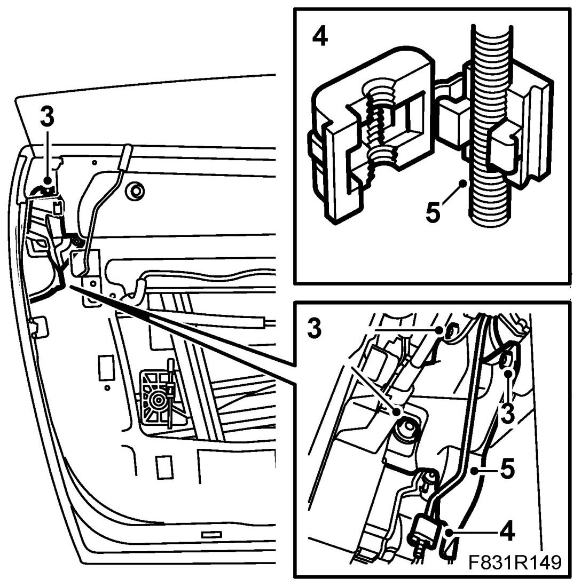
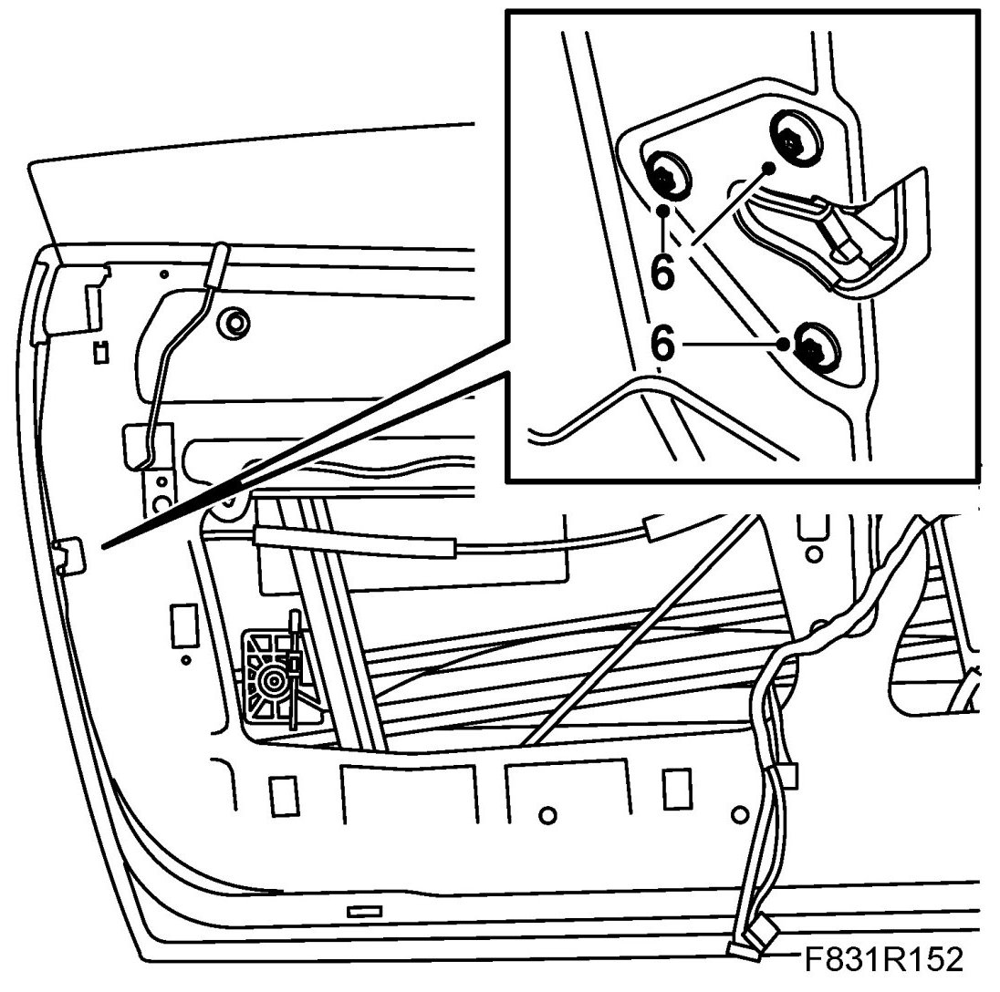
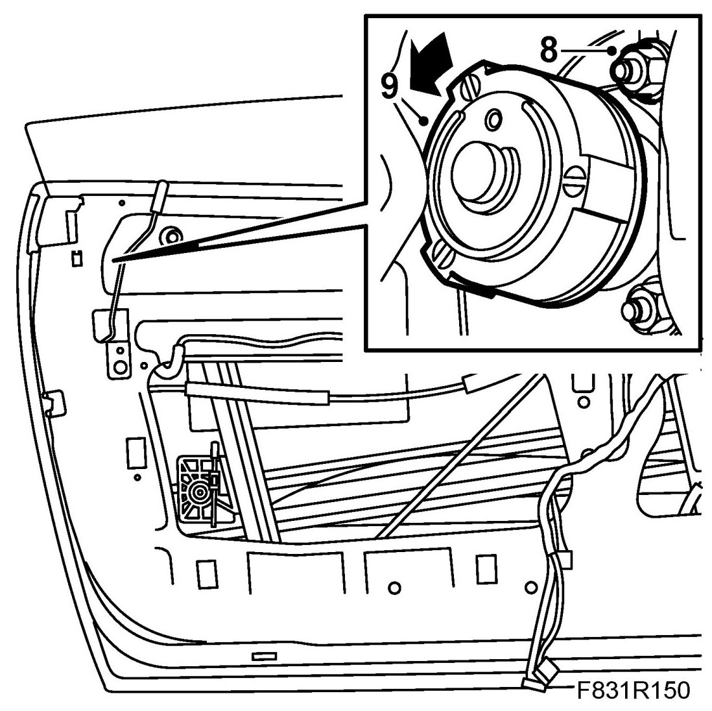
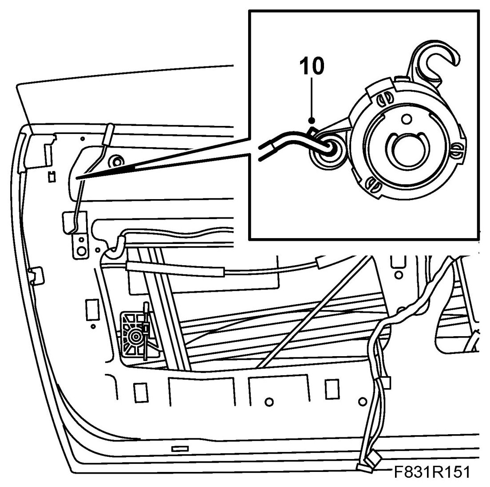
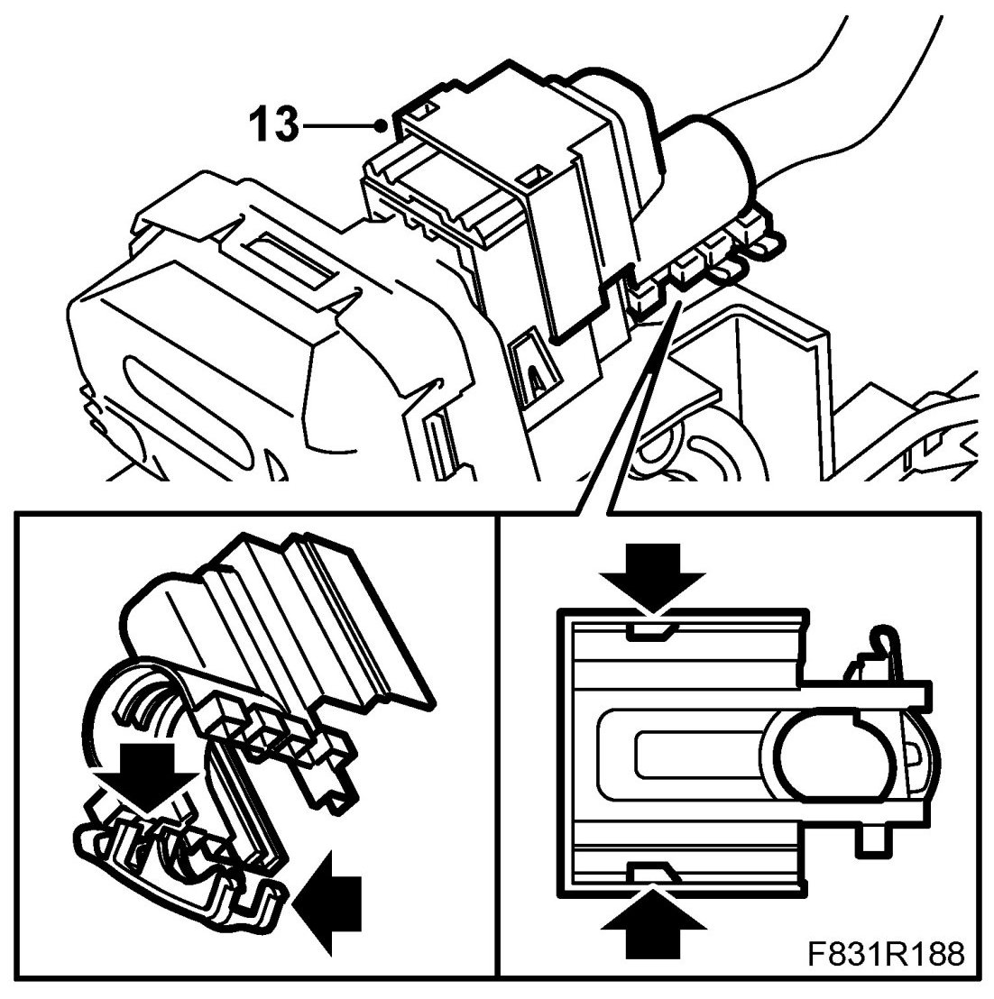
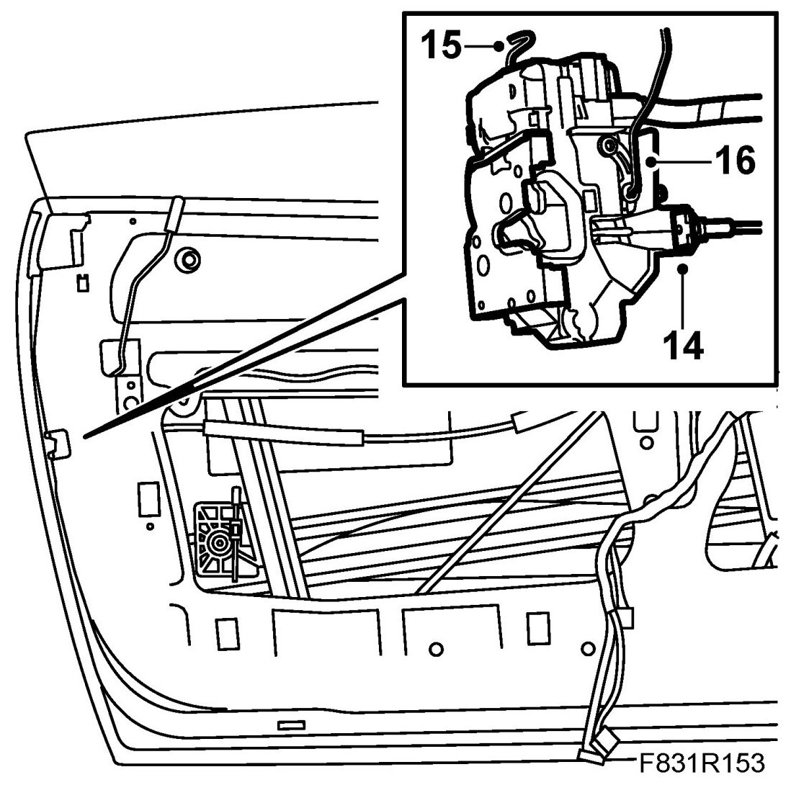
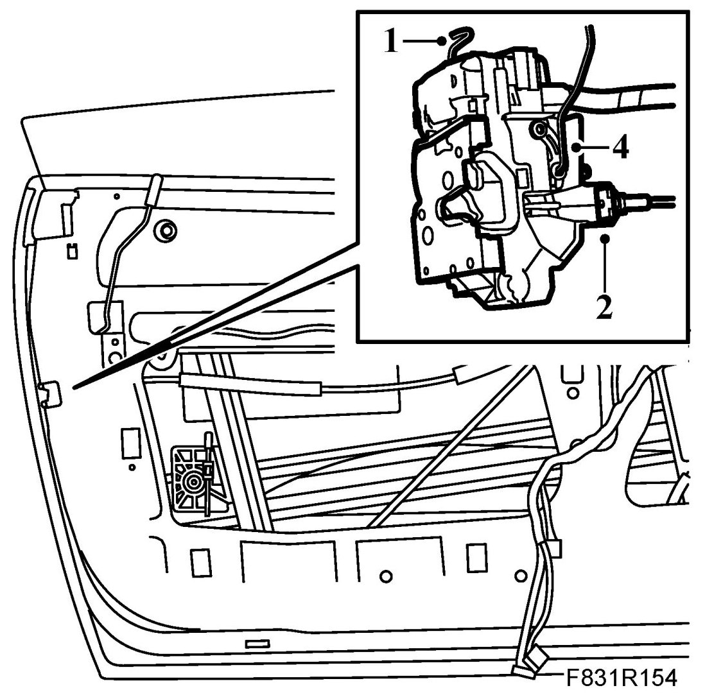
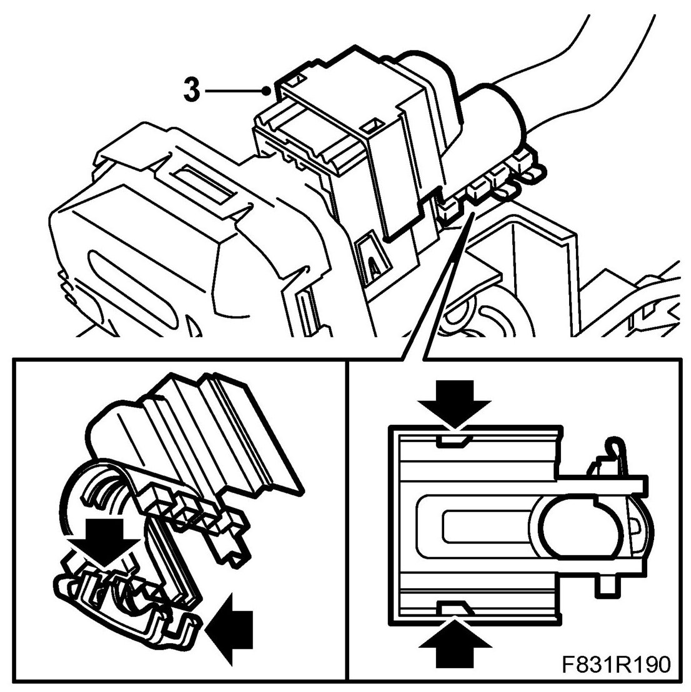
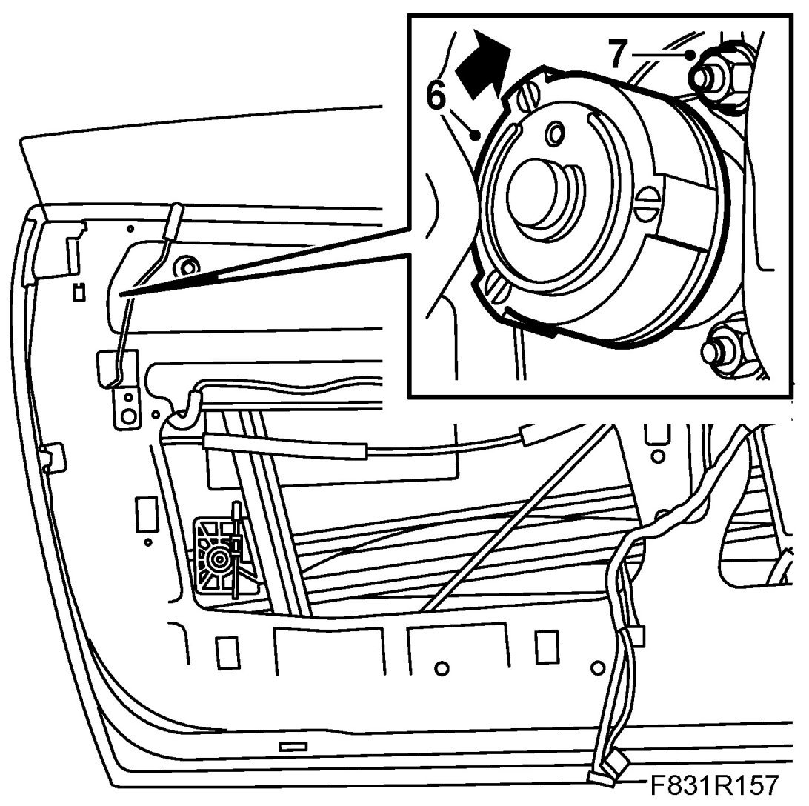
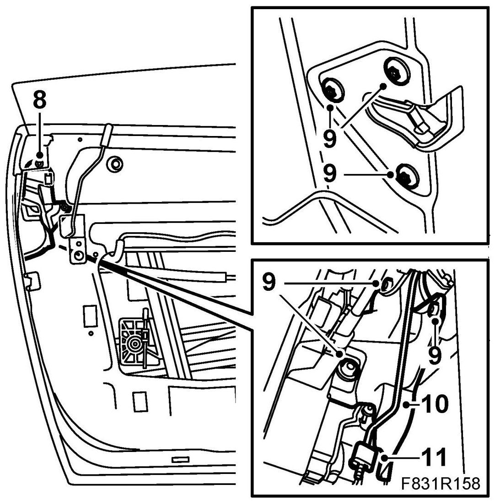

Door Lock Unit, CV
Door Lock Unit, CV
To remove
1. Right door: Raise the window to the highest position.
Left door: Remove Side window, door, CV.
2. Remove Door trim, CV. Fold down the moisture barrier.
3. Cars with guard: Remove the guard's screws.

4. Remove the lock cover from the rod.
5. Remove the rod from the clip.
6. Remove the lock bolts. Allow the lock to hang freely.

7. Cars with guard: Remove the guard by pulling the guard forward and downward and then lifting it out.
8. Remove the upper rear nut for the handle and lock cylinder.

9. Left door: Turn the lock cylinder anti-clockwise and pull out the cylinder from the handle.
10. Left door: Unhook the cylinder from the lock rod.

11. Lift up the lock in order to unhook the lock button rod.
12. Remove the lock from the door at an angle.
13. Remove the holder for the connector cable stem.

14. Unplug the connector.
15. Remove the inner handle cable from the lock unit by pushing in the cable retaining clip from the back side.

16. Remove the rod from the lock unit.
To fit
1. Left door: Hook the lock cylinder rod to the lock unit.

2. Fit the inner door handle cable in the lock unit.
3. Plug in the lock unit connector and fit the holder for the connector cable stem.

4. Insert the lock into position and hook on the lock button rod.
5. Left door: Hook the lock cylinder to the rod.
6. Left door: Fit the lock cylinder by pushing the lock cylinder and turning it clockwise.

7. Fit the handle's upper rear nut.
8. Cars with guard: Insert the guard. Make sure the rod from the handle is in front of the guard.

9. Lift up the lock and secure it with a bolt. Also, thread the bolts for the guard (certain cars only) and lock. Start by tightening the lock bolts followed by the guard bolts.
10. Push the rod into the clip.
11. Lift in the clip at the same time as you fit the lock cover to eliminate play.
12. Check the function of the lock, lock cylinder and the outer handle.
13. Left door: Fit Side window, door, CV.
14. Fit the plastic water barrier.
15. Fit the Door trim, CV.
16. Cars with pinch protection: Perform Programming of the pinch protection.